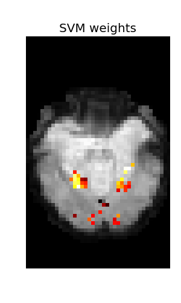

A significant part of the running time of this example is actually spent in loading the data: we load all the data but only use the face and houses conditions.
Script output:
=== ANOVA ===
Classification accuracy: 1.000000 / Chance level: 0.500000
Python source code: plot_haxby_anova_svm.py
### Load Haxby dataset ########################################################
from nilearn import datasets
import numpy as np
haxby_dataset = datasets.fetch_haxby_simple()
y, session = np.loadtxt(haxby_dataset.session_target).astype("int").T
conditions = np.recfromtxt(haxby_dataset.conditions_target)['f0']
### Preprocess data ###########################################################
### Restrict to faces and houses ##############################################
condition_mask = np.logical_or(conditions == 'face', conditions == 'house')
y = y[condition_mask]
conditions = conditions[condition_mask]
# We have 2 conditions
n_conditions = np.size(np.unique(y))
### Loading step ##############################################################
from nilearn.input_data import NiftiMasker
mask_filename = haxby_dataset.mask
# For decoding, standardizing is often very important
nifti_masker = NiftiMasker(mask_img=mask_filename, sessions=session,
smoothing_fwhm=4, standardize=True,
memory="nilearn_cache", memory_level=1)
func_filename = haxby_dataset.func
X = nifti_masker.fit_transform(func_filename)
# Apply our condition_mask
X = X[condition_mask]
session = session[condition_mask]
### Prediction function #######################################################
### Define the prediction function to be used.
# Here we use a Support Vector Classification, with a linear kernel
from sklearn.svm import SVC
svc = SVC(kernel='linear')
### Dimension reduction #######################################################
from sklearn.feature_selection import SelectKBest, f_classif
### Define the dimension reduction to be used.
# Here we use a classical univariate feature selection based on F-test,
# namely Anova. We set the number of features to be selected to 500
feature_selection = SelectKBest(f_classif, k=500)
# We have our classifier (SVC), our feature selection (SelectKBest), and now,
# we can plug them together in a *pipeline* that performs the two operations
# successively:
from sklearn.pipeline import Pipeline
anova_svc = Pipeline([('anova', feature_selection), ('svc', svc)])
### Fit and predict ###########################################################
anova_svc.fit(X, y)
y_pred = anova_svc.predict(X)
### Visualization #############################################################
### Look at the SVC's discriminating weights
coef = svc.coef_
# reverse feature selection
coef = feature_selection.inverse_transform(coef)
# reverse masking
weight_img = nifti_masker.inverse_transform(coef)
### Create the figure
from nilearn import image
import matplotlib.pyplot as plt
from nilearn.plotting import plot_stat_map
# Plot the mean image because we have no anatomic data
mean_img = image.mean_img(func_filename)
plot_stat_map(weight_img, mean_img, title='SVM weights')
### Saving the results as a Nifti file may also be important
weight_img.to_filename('haxby_face_vs_house.nii')
### Cross validation ##########################################################
from sklearn.cross_validation import LeaveOneLabelOut
### Define the cross-validation scheme used for validation.
# Here we use a LeaveOneLabelOut cross-validation on the session label
# divided by 2, which corresponds to a leave-two-session-out
cv = LeaveOneLabelOut(session // 2)
### Compute the prediction accuracy for the different folds (i.e. session)
cv_scores = []
for train, test in cv:
anova_svc.fit(X[train], y[train])
y_pred = anova_svc.predict(X[test])
cv_scores.append(np.sum(y_pred == y[test]) / float(np.size(y[test])))
### Print results #############################################################
### Return the corresponding mean prediction accuracy
classification_accuracy = np.mean(cv_scores)
### Printing the results
print "=== ANOVA ==="
print "Classification accuracy: %f" % classification_accuracy, \
" / Chance level: %f" % (1. / n_conditions)
# Classification accuracy: 0.986111 / Chance level: 0.500000
plt.show()
Total running time of the example: 5.34 seconds ( 0 minutes 5.34 seconds)